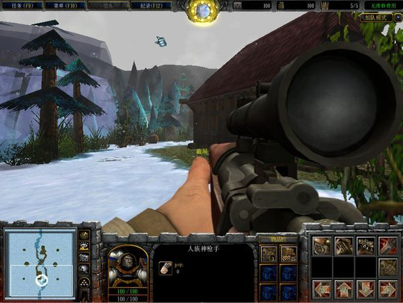
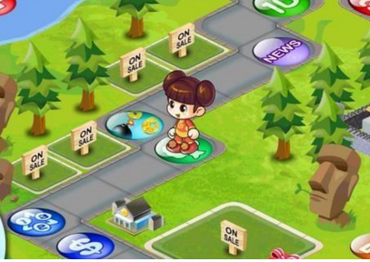
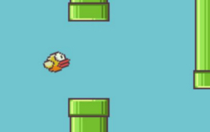
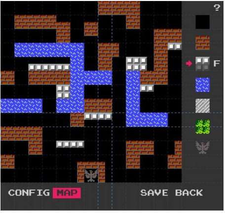
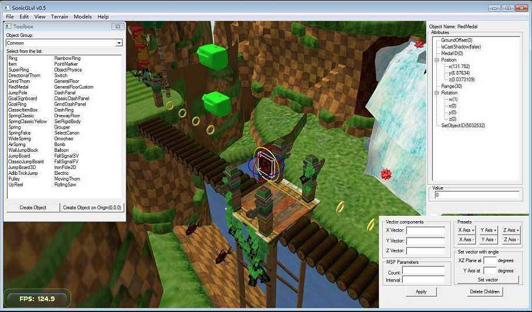

- 00 开篇词 跟我学，你也可以开发一款游戏！.md.html
- 复习课 带你梳理客户端开发的三个重点.md.html
- 第10讲 如何载入“飞机”和“敌人”？.md.html
- 第11讲 如何设置图像的前后遮挡？.md.html
- 第12讲 如何设置精灵的变形、放大和缩小？.md.html
- 第13讲 如何设置淡入淡出和碰撞检测？.md.html
- 第14讲 如何制作游戏资源包和保存机制？.md.html
- 第15讲 如何载入背景音乐和音效？.md.html
- 第16讲 如何在游戏中载入UI和菜单？.md.html
- 第17讲 如何用鼠标和键盘来操作游戏？.md.html
- 第18讲 如何判断客户端的网络连接？.md.html
- 第19讲 如何嵌入脚本语言？.md.html
- 第1讲 游戏开发需要了解哪些背景知识？.md.html
- 第20讲 脚本语言在游戏开发中有哪些应用？.md.html
- 第21讲 如何使用脚本语言编写周边工具？.md.html
- 第22讲 如何选择合适的开发语言？.md.html
- 第23讲 如何定制合适的开发协议？.md.html
- 第24讲 不可忽视的多线程及并发问题.md.html
- 第25讲 如何判断心跳包是否离线？.md.html
- 第26讲 如何用网关服务器进行负载均衡？.md.html
- 第27讲 如何制作游戏内容保存和缓存处理？.md.html
- 第28讲 热点剖析（一）：HTML5技术是如何取代Flash的？.md.html
- 第29讲 热点剖析（二）：如何选择一款HTML5引擎？.md.html
- 第2讲 2D游戏和3D游戏有什么区别？.md.html
- 第30讲 热点剖析（三）：试试看，你也可以编写一款HTML5小游戏！.md.html
- 第31讲 热点剖析（四）：安卓端和苹果端游戏开发有什么区别？.md.html
- 第32讲 热点剖析（五）：如何选择移动端的游戏引擎？.md.html
- 第33讲 热点剖析（六）：AR和人工智能在游戏领域有哪些应用？.md.html
- 第34讲 热点剖析（七）：谈谈微信小游戏的成功点.md.html
- 第35讲 热点剖析（八）：谈谈移动游戏的未来发展.md.html
- 第36讲 热点剖析（九）：谈谈独立开发者的未来发展.md.html
- 第3讲 游戏的发动机：游戏引擎.md.html
- 第4讲 底层绘图接口的妙用.md.html
- 第5讲 构建游戏场景的武器：地图编辑器.md.html
- 第6讲 从0开始整理开发流程.md.html
- 第7讲 如何建立一个Windows窗体？.md.html
- 第8讲 如何区分图形和图像？.md.html
- 第9讲 如何绘制游戏背景？.md.html
- 结束语 做游戏的过程就像是在雕琢一件艺术品.md.html
- 课后阅读 游戏开发工程师学习路径（上）.md.html
- 课后阅读 游戏开发工程师学习路径（下）.md.html
- 捐赠
第5讲 构建游戏场景的武器：地图编辑器
今天，我想和你聊一聊基础知识模块的最后一部分，地图编辑器。为了给之后的内容铺垫，我还会顺带介绍一些游戏Demo的知识。
我们先来看一幅图。这看起来是一款FPS射击游戏对不对？也对也不对。说对，因为这确实是一款FPS游戏；说不对，这其实只是一幅地图，但是这幅地图来自《魔兽争霸3》。更准确地说，这是使用《魔兽争霸3》的地图编辑器制作出来的一幅游戏地图。

《魔兽争霸3》发布之初，没人能想到并且能做出这样“变态”且“不走寻常路”的地图。《魔兽争霸3》的地图编辑器之强大，直到它发布五、六年后，才有人开始制作出这样令人匪夷所思的地图。
地图编辑器在游戏开发的前期扮演着非常重要的角色，它的主要功能就是用来制作游戏地图。 因为我们现在是一个人来开发一款游戏，不涉及分工的问题。而常规的团队在进行游戏开发的过程中，用地图编辑器制作地图是由美术来负责的。
地图编辑器本身一般会由专业的地图编辑器程序员来开发完成。地图编辑器可以使用原生引擎所支持的语言来编写，比如C/C++；也可以使用引擎加嵌入脚本语言的方式来进行编写，比如Lua等。但是现在，一些成熟的游戏引擎都会自带地图编辑器。所以，大多数时候地图编辑器不需要你自己开发。
地图编辑器有哪些种类？
地图编辑器并非千篇一律。由于游戏类型的不同，地图编辑器也不相同。比如我们做一个《大富翁》类的游戏，我们就需要做一个斜45度角的地图编辑器。
如果是俯视角度的游戏，地图编辑器的视角呈现方式也类似斜45度角的游戏。这两种编辑器制作地图的方式极其类似，唯一不同的是，斜45度角是用菱形的地图块拼接而成，俯视视角是用矩形的地图块拼接而成的。

我们做一个横版卷轴游戏，就需要在地图编辑器内摆放横版的地图。如果地图是重复地图，类似《管道鸟》，那就需要程序员重复贴图，而不需要在地图编辑器重复编辑相同的地图。

3D游戏就会有3D地图编辑器，就像前面的《魔兽争霸》编辑器，就是一个3D视角。地图编辑器的种类不同，保存的地图类型和文件结构也不一样。有些地图编辑器保存的是图片和位置，而有一些保存的却是一个脚本文件，方便直接载入游戏程序。
为什么要了解地图编辑器的编写过程？
我刚才说过，大多数时候地图编辑器不需要你自己开发。但是我们依然要了解地图编辑器是如何编写出来的，至于了解这些究竟有什么用呢？我继续来给你讲。
1.编写地图编辑器的过程，能让你更好地了解游戏引擎。 从编写地图编辑器开始，就是对游戏引擎的一次全面应用。为什么这么说呢，因为在编写地图编辑器的过程中，除了音乐模块或许暂时不会被用到外，利用引擎编写的地图编辑器、地图资源的载入代码、保存代码等等，都会被用在正式的游戏中。
2.编写地图编辑器的过程，可以优化游戏开发流程。 程序员之间会讨论关于资源载入、游戏内容加载和读取这些基础问题，并将最基础的流程完整地梳理一遍。在游戏正式开始开发之前，把这些流程梳理一遍，能极大提升开发过程中的流畅性。
3.编写地图编辑器的过程，涉及UI、按钮和键盘事件的使用。地图编辑器开发完毕后，主要是给美术人员使用，所以UI的点击、鼠标键盘事件是必不可少的。在地图编辑器中运用UI、按钮、键盘事件后，在正式游戏开发中，这些代码可以直接移植到游戏代码中使用。
4.编写地图编辑器的过程，能起到团队磨合的作用。 在编写的过程中，你会接触到策划、美术等很多人的意见，程序员之间也会对引擎的应用有很多的讨论。
地图编辑器与关卡编辑器
说到地图编辑器，不得不提到关卡编辑器。关卡编辑器是一种主要给策划使用的编辑器，它涉及地图中的关卡内容。 一般情况下，关卡编辑器不涉及具体的地图细节，但是它涉及总体的游戏地图和游戏流程。
简单来说，地图编辑器的功能就相当于房屋的结构朝向图。我们可以从这张图里，看到每个房间的俯视图。里面包括门的位置、阳台的位置，甚至厕所的位置。而装修公司设计家居，就相当于关卡编辑器的功能。设计师会在你已有房间的结构内，摆放各种桌子、椅子、床、柜子、灯泡等具体的家居用品。
在实际开发过程中，很多时候，只有一些成体系的大游戏才会把关卡编辑器单独分出来。很多时候，对一些小游戏来说，关卡编辑器和地图编辑器经常是在一起的，你可以在地图编辑器里面直接来编写关卡。这张 《坦克大战》的地图编辑器中就包含了关卡编辑器的内容。

这里有一个3D游戏的关卡编辑器的界面。我们常见的关卡编辑器的界面一般都是这样的。这个界面最左侧的对话框，是物件的选择界面，具体包括关卡内物件的选择和摆放；界面右侧的对话框是属性选择界面，定义这个物件的属性，比如这个物件是否可以弹跳、爆炸等等；界面右下角是物件X、Y、Z轴的编辑，可以自定义物件的拉伸和缩放。

我们拿FPS枪战游戏来举例。我们可以先在编辑器内画完所有俯视角的地图通路，然后在这个地方放上某种武器，在那个地方放上某种升级包。这就是一个关卡的总体架构。
随后，你需要在编辑器里编写一些简单的脚本程序。这些脚本程序会涉及玩家在进入游戏后总体的游戏进程和逻辑。比如，你可能会写“分数达到多少之后，等级+1”“击杀敌人达到多少之后，分数+10”“失血达到多少出现什么情况”等等。
总之，关卡编辑器和地图编辑器的功能，就好比家装设计图和房屋结构朝向图，一个是在地图内设置物件的摆放位置和具体的表现形式；一个是设计地图本身。
为什么要做游戏Demo？
按照传统的标准游戏开发流程，在编写完地图编辑器之后，就要开发游戏了。事实上，开发游戏的初期，我们必须要制作这款游戏的Demo。很多商业游戏制作之前都是要先做游戏Demo的。你或许会问，为什么不立刻开发一个正式的游戏呢？我总结了一下，有以下几方面的原因：
1.游戏Demo可以完成游戏核心框架。 绝大部分情况下，最终完成的游戏成品，都会和游戏Demo有较大的差异。这些差异体现在美术画面的优化细节、操作的优化细节、网络优化上等等。游戏Demo所肩负的任务，就是完成该游戏总体的核心内容框架。 在这个框架内，我们可以一窥游戏的总体逻辑、想呈现给玩家的是什么内容。
比如，《三国志》题材的游戏，游戏Demo就会呈现在大地图上进行城市内政的管理、军队的管理，以及战斗画面这些游戏的核心内容；比如FPS射击游戏，游戏Demo呈现出的就是，主角在一个有限的空间内进行射击和击杀敌人的操作，因为这些就是游戏的核心。至于游戏是不是好玩，画面是不是炫酷，音乐是不是好听，并不在游戏Demo中呈现。
2.游戏Demo可以测试bug。 在游戏开发中，地图编辑器做完之后，会载入经地图编辑器制作的地图，这些地图在游戏中是否有bug，是否需要调整，游戏体验好不好。这些内容在游戏Demo中将被测试出来，并且在正式开发中进行调整。
3.游戏Demo可以磨合开发团队。 前面我们提到，有一些引擎自带地图编辑器，所以大多数情况下，地图编辑器不需要你自己编写。这个时候，你敲下的第一行代码就是游戏Demo的代码，所以游戏Demo就肩负另一个使命，就是团队人员的磨合。和地图编辑器一样，第一次编写游戏Demo，会有来自策划、美术、程序等各方面的意见和讨论，而制作游戏Demo的过程对磨合团队是非常有利的。
4.游戏Demo最终会被舍弃。 在开发过程中，Demo版本是不稳定的，是有bug的。只要不是特别严重的，一般不会去进行特别的修正。但是一般来说，bug会在正式版本中被修正。所以，游戏Demo肩负的另一个任务，就是“试水”。程序代码在游戏中跑起来是不是有瓶颈，bug出现在哪里，哪些部分可以从Demo中提取出来，在正式开发中使用，哪些部分可以在正式版本中优化，这些都是游戏Demo所背负的“使命”。
很多开发团队为了节省时间，很多公司老板为了节省成本，在地图编辑器完成之后，就跳过了游戏Demo开发这个步骤，或者有些开发leader根本就不知道要做Demo这个流程，所以一开始就去做正式版。这是个很危险的动作。
因为按照流程，如果一上来就开始编写正式版本的游戏，很有可能会出现无法预估的bug和无法修正的问题。 比如，地图编辑器中保存的地图，在正式游戏中就出现极大的错误，连修正的时间都没有，最终修修补补急急忙忙地上线，玩家一片怨声载道。游戏死亡。
当然，由于游戏类型不同，地图编辑器、关卡编辑器和游戏Demo，并非是必须要做的内容，就像我们要做的“打飞机”这样简单的游戏，甚至贪吃蛇、俄罗斯方块、象棋、围棋等等，这些都不需要任何编辑器，这些单一简单的游戏，开发流程简单，如果出现问题直接重新编写就可以了。
小结
这一节，我讲了地图编辑器、关卡编辑器和游戏Demo相关的内容，你只需要记住这些重点：
开发地图编辑器的过程可以帮助开发人员了解引擎、优化开发流程、测试bug、磨合团队；
关卡编辑器之于地图编辑器，就好比装修设计图和房屋朝向图之间的关系；
游戏Demo的使命是完成游戏核心框架，测试地图编辑器等问题，Demo最终会被舍弃；
在游戏开发的正规流程中，我们要经历地图编辑器、关卡编辑器、游戏Demo、正式开发等几个流程，每一个流程都肩负不一样的任务。但简单如贪吃蛇类的游戏，我们可以直接上手编写代码。
最后，给你留一道小思考题吧。
用地图编辑器制作出来的地图有没有取巧的保存方法，让游戏程序读取地图时更方便？
欢迎留言说出你的看法，我在下一节的挑战中等你！
© 2019 - 2023 Liangliang Lee. Powered by gin and hexo-theme-book.